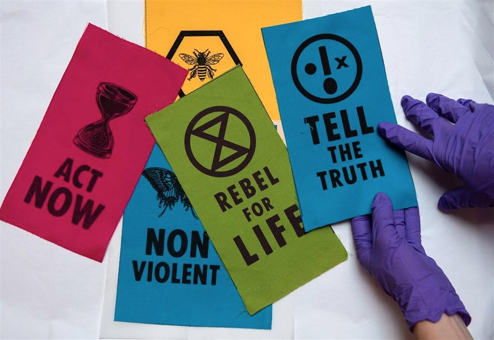
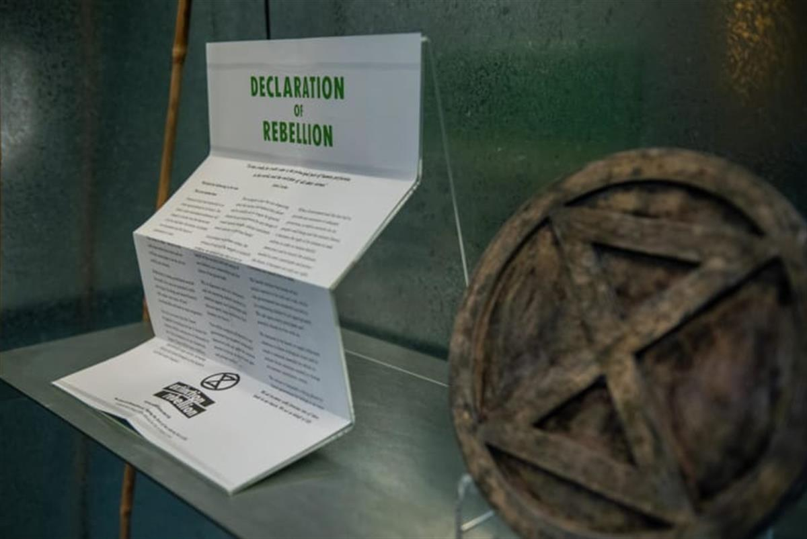
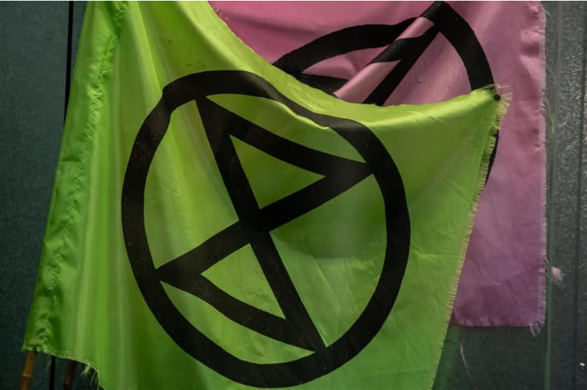

Article: David Styles | Image: © Chris J Ratcliffe/Getty Images for The V&A
Aside from its reputation as a steadfast collector of artefacts from a plethora of historic periods, the V&A has demonstrated its prolonged commitment to connecting audiences with items from the world around them today by acquiring objects associated with Extinction Rebellion’s climate campaigning.
The V&A’s Rapid Response Collecting Gallery is the organisation’s key mechanism to achieve the goal of showing current cultural phenomena inside its grand, traditional South Kensington site – and one which has been rewarded strongly by proving a hit with visitors.
The importance of an exhibition being topical and relevant is at the heart of this strand of the V&A’s work, and this latest addition couldn’t have been better timed – given that yesterday saw the UK’s hottest July day on record.
Objects the V&A have swooped in for on this occasion include the open-source Extinction Symbol adopted by the campaign group last year and the Declaration that accompanied Extinction Rebellion’s first public demonstration in October 2018.
The range of new acquisitions have been made possible through the V&A’s Rapid Response Collecting programme, which enables the procurement and immediate display of design objects that address questions of social, political, technological and economic change.
In place since 2014, the Rapid Response Collection has grown to over thirty objects that chart the impact of contemporary design on the modern world.
Corinna Gardner, Senior Curator of Design and Digital at the V&A, has been charged with curating the objects which explore Extinction Rebellion’s journey to dates. She noted that “the objects we bring into the V&A through our Rapid Response Collecting programme are evidence of social, technological and economic change.
“Extinction Rebellion have galvanised public concern for the planet, and their design approach stands in relation to earlier protest movements such as the Suffragettes who encouraged the wearing of purple, green and white to visually communicate their cause.”

© Chris J Ratcliffe/Getty Images for The V&AAlongside these items on display from today at the V&A London, a child’s high-vis jacket worn during a peaceful Extinction Rebellion has been acquired by the V&A Museum of Childhood. This will be on display from 9th August as part of a free six-month exhibition.
Clive Russell, Extinction Rebellion Arts Group, said the activist organisation is ”pleased our work and practice can be seen for free at the V&A, a collection that includes works by William Morris and other design activists from the past.
“All these designers addressed the issues of their times. The Climate and Ecological emergency is the issue of our time and art and design is crucial to our non-violent actions and communication.”
Climate activism is becoming increasingly prominent in the cultural sector, with Advisor recently highlighting that measures taken by several of London’s largest museums – including the V&A – mean that they now send less waste to landfill annually that the UK environment department.
SOURCE: MUSEUMS AND HERITAGE
FURTHER READING: CNN - Designing a movement -- Extinction Rebellion climate protest artifacts to go on display at London's V&A

